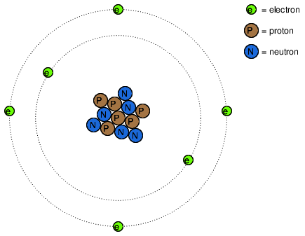
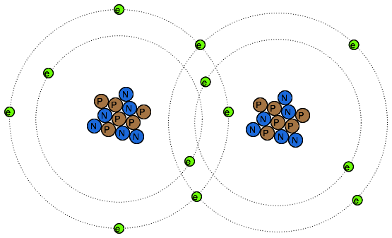
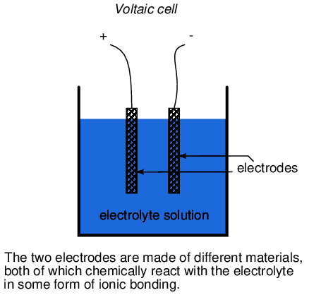
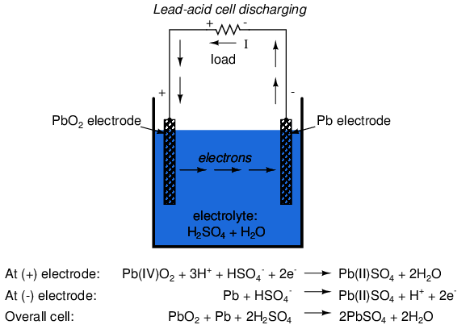

Lecciones de circuitos eléctricos - Volumen I
Capítulo 11
BATERÍAS Y SISTEMAS DE ENERGÍA
- Electron activity in chemical reactions
- Battery construction
- Battery ratings
- Special-purpose batteries
- Practical considerations
- Contributors
- Bibliography
Electron activity in chemical reactions
Hasta ahora, en nuestras discusiones sobre electricidad y circuitos eléctricos, no hemos discutido en detalle cómo funcionan las baterías. Más bien, simplemente hemos asumido que producen un voltaje constante mediante algún tipo de proceso misterioso. Aquí, exploraremos ese proceso hasta cierto punto y cubriremos algunas de las consideraciones prácticas relacionadas con las baterías reales y su uso en sistemas de energía.
En el primer capítulo de este libro, el concepto deátomose discutió, como el componente básico de todos los objetos materiales. Los átomos, a su vez, están compuestos de piezas de materia aún más pequeñas llamadaspartículas. Los electrones, protones y neutrones son los tipos básicos de partículas que se encuentran en los átomos. Cada uno de estos tipos de partículas juega un papel distinto en el comportamiento de un átomo. Si bien la actividad eléctrica implica el movimiento de electrones, la identidad química de un átomo (que determina en gran medida qué tan conductor será el material) está determinada por la cantidad de protones en el núcleo (centro).

Los protones en el núcleo de un átomo son extremadamente difíciles de desalojar, por lo que la identidad química de cualquier átomo es muy estable. Uno de los objetivos de los antiguos alquimistas (convertir el plomo en oro) se vio frustrado por esta estabilidad subatómica. Todos los esfuerzos por alterar esta propiedad de un átomo mediante calor, luz o fricción fracasaron. Los electrones de un átomo, sin embargo, son mucho más fáciles de desalojar. Como ya hemos visto, la fricción es una forma en la que se pueden transferir electrones de un átomo a otro (vidrio y seda, cera y lana), y también lo es el calor (generando voltaje calentando una unión de metales diferentes, como en el caso de los termopares).
Los electrones pueden hacer mucho más que simplemente moverse alrededor de los átomos y entre ellos: también pueden servir para unir diferentes átomos. Esta unión de átomos por electrones se llamaenlace químico. Una representación cruda (y simplificada) de dicho enlace entre dos átomos podría verse así:

Hay varios tipos de enlaces químicos, el que se muestra arriba es representativo de uncovalenteEnlace, donde los electrones se comparten entre átomos. Debido a que los enlaces químicos se basan en enlaces formados por electrones, estos enlaces son tan fuertes como la inmovilidad de los electrones que los forman. Es decir, los enlaces químicos pueden crearse o romperse por las mismas fuerzas que obligan a los electrones a moverse: calor, luz, fricción, etc.
Cuando los átomos se unen mediante enlaces químicos, forman materiales con propiedades únicas conocidas comomoléculas. La imagen del átomo dual que se muestra arriba es un ejemplo de una molécula simple formada por dos átomos del mismo tipo. La mayoría de las moléculas son uniones de diferentes tipos de átomos. Incluso las moléculas formadas por átomos del mismo tipo pueden tener propiedades físicas radicalmente diferentes. Tomemos como ejemplo el elemento carbono: en una forma,grafito, los átomos de carbono se unen para formar "placas" planas que se deslizan unas contra otras muy fácilmente, dando al grafito sus propiedades lubricantes naturales. En otra forma,diamante, los mismos átomos de carbono se unen en una configuración diferente, esta vez en forma de pirámides entrelazadas, formando un material de extrema dureza. En otra forma más,fullereno,Decenas de átomos de carbono forman cada molécula, que se parece a un balón de fútbol. Las moléculas de fullereno son muy frágiles y ligeras. El hollín aireado formado por una combustión excesivamente rica de gas acetileno (como en el encendido inicial de un soplete de soldadura/corte de oxiacetileno) contiene muchas moléculas de fullereno.
Cuando los alquimistas lograron cambiar las propiedades de una sustancia mediante el calor, la luz, la fricción o la mezcla con otras sustancias, en realidad estaban observando cambios en los tipos de moléculas formadas por átomos que se rompían y formaban enlaces con otros átomos. La química es la contraparte moderna de la alquimia y se ocupa principalmente de las propiedades de estos enlaces químicos y las reacciones asociadas con ellos.
Un tipo de enlace químico de particular interés para nuestro estudio de las baterías es el llamadoiónicovínculo, y difiere delcovalenteenlace en el que un átomo de la molécula posee un exceso de electrones mientras que otro átomo carece de electrones, siendo los enlaces entre ellos el resultado de la atracción electrostática entre dos cargas diferentes. Cuando se forman enlaces iónicos a partir de átomos neutros, hay una transferencia de electrones entre los átomos con carga positiva y negativa. Un átomo que gana un exceso de electrones se dice que esreducido; Se dice que un átomo con deficiencia de electrones esoxidado. Un mnemotécnico para ayudar a recordar las definiciones es OIL RIG (oxidado es menos; reducido se gana). Es importante señalar que las moléculas suelen contener enlaces tanto iónicos como covalentes. El hidróxido de sodio (lejía, NaOH) tiene un enlace iónico entre el átomo de sodio (positivo) y el ion hidroxilo (negativo). El ion hidroxilo tiene un enlace covalente (que se muestra como una barra) entre los átomos de hidrógeno y oxígeno:
Na+ O—H-El sodio solo pierde un electrón, por lo que su carga es +1 en el ejemplo anterior. Si un átomo pierde más de un electrón, la carga resultante se puede indicar como +2, +3, +4, etc. o mediante un número romano entre paréntesis que muestra el estado de oxidación, como (I), (II), (IV), etc. Algunos átomos pueden tener múltiples estados de oxidación y, a veces, es importante incluir el estado de oxidación en la fórmula molecular para evitar ambigüedades.
La formación de iones y enlaces iónicos a partir de átomos o moléculas neutros (oviceversa) implica la transferencia de electrones. Esa transferencia de electrones se puede aprovechar para generar una corriente eléctrica. Un dispositivo construido para hacer precisamente esto se llamacelda voltaica, ocelúlaPara abreviar, generalmente consta de dos electrodos metálicos sumergidos en una mezcla química (llamadaelectrólito) diseñado para facilitar dicha reacción electroquímica (oxidación/reducción):

En la celda común de "plomo-ácido" (del tipo que se usa comúnmente en los automóviles), el electrodo negativo está hecho de plomo (Pb) y el positivo está hecho de dióxido de plomo (IV) (Pb0).2), ambas sustancias metálicas. Es importante señalar que el dióxido de plomo es metálico y es un conductor eléctrico, a diferencia de otros óxidos metálicos que suelen ser aislantes. (nota: tabla below) La solución de electrolito es un ácido sulfúrico diluido (H2SO4 + H2O). Si los electrodos de la celda están conectados a un circuito externo, de modo que los electrones tengan un lugar para fluir de uno a otro, los átomos de plomo (IV) en el electrodo positivo (PbO2) ganará dos electrones cada uno para producir Pb(II)O. Los átomos de oxígeno que “sobran” se combinan con iones de hidrógeno cargados positivamente (H)+para formar agua (H2O). Este flujo de electrones hacia el dióxido de plomo (PbO2) electrodo, le da una carga eléctrica positiva. En consecuencia, los átomos de plomo en el electrodo negativo ceden dos electrones cada uno para producir plomo Pb(II), que se combina con iones sulfato (SO4-2) producido a partir de la disociación de los iones de hidrógeno (H+) del ácido sulfúrico (H2SO4) para formar sulfato de plomo (PbSO4). El flujo de electrones que sale del electrodo de plomo le da una carga eléctrica negativa. Estas reacciones se muestran esquemáticamente a continuación:[DOE]
